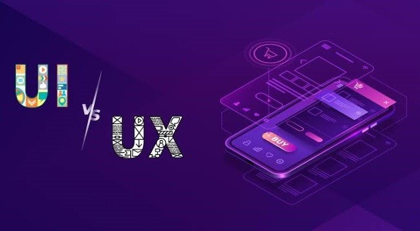
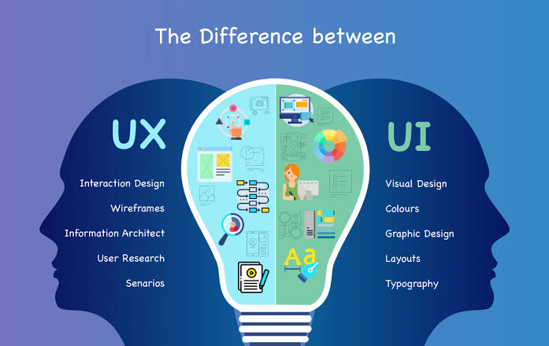
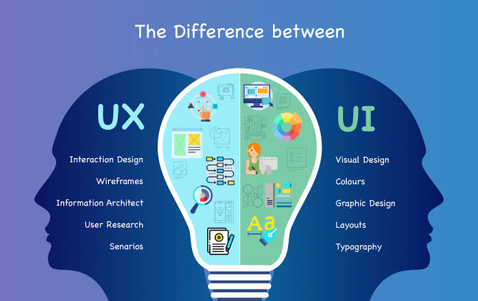

Módulo 1: Fundamentos de UI & UX
- O que é UI (Interface do Usuário) e UX (Experiência do Usuário) e sua importância.
- Princípios de design centrado no usuário.
- Compreendendo o ciclo de vida da experiência do usuário.
Módulo 2: Design de Interface do Usuário (UI)
- Elementos de UI: botões, formulários, navegação e tipografia.
- Princípios de design visual: layout, cor, contraste e hierarquia.
- Prototipagem e wireframing para criar interfaces eficazes.
Módulo 3: Pesquisa e Testes de Usuário
- Conduzindo pesquisas de usuário para entender as necessidades e preferências.
- Testes de usabilidade e feedback do usuário.
- Iteração de design com base em resultados de pesquisa.
Módulo 4: Experiência do Usuário (UX) de Alto Nível
- Design de jornada do usuário: mapeando interações do usuário.
- Criação de fluxos de usuário intuitivos.
- Desenvolvimento de personas de usuário.
Módulo 5:Design Responsivo e Acessibilidade
- Criando experiências responsivas para diferentes dispositivos.
- Design inclusivo e acessibilidade digital.
- Considerações de design para diversos públicos.
Módulo 6:Prototipagem e Ferramentas
- Prototipagem interativa de interfaces de usuário.
- Uso de ferramentas de design e prototipagem.
- Apresentação de protótipos para stakeholders.
Módulo 7: Projeto Prático de UI & UX
- Aplicação de todas as habilidades aprendidas em um projeto prático.
- Design de uma interface de usuário completa e testes de usabilidade.
- Avaliação e refinamentos finais com base no feedback do usuário.


